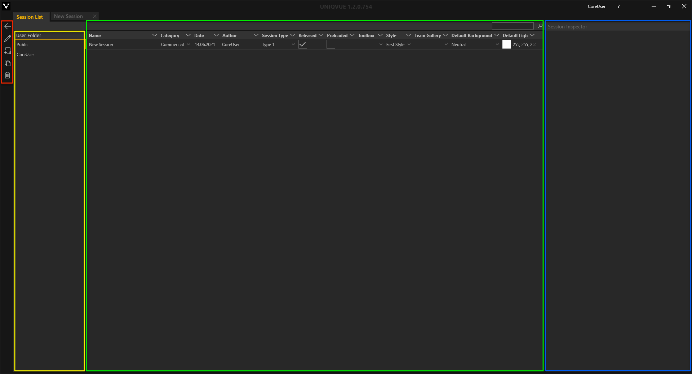
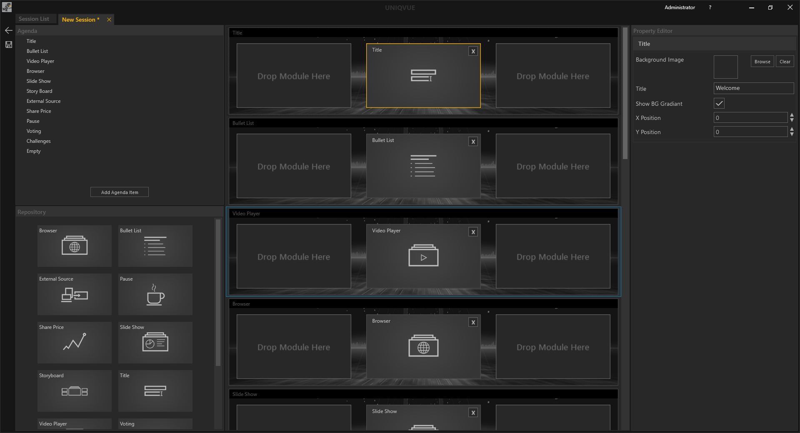

Sessions
Sessions sind die Kernelemente einer jeden Präsentation und werden im Showroom verfügbar gemacht. In einer Session ist zum Einen ihre Agenda, also die Struktur Ihrer Präsentation und zum Anderen das gesamte Erscheinungsbild und die Funktionalität des Showrooms definiert. Kapitel Dashboard liefert dazu einen Überblick.
Hier finden Sie einen allgemeinen Überblick zu Sessions.
Die Session List

Das Session List Fenster unterteilt sich in vier Bereiche, die zur besseren Übersicht farbig umrandet sind. Ganz Links befinden sich die allgemeinen Bedienelemente. Daneben befindet sich eine Übersicht der öffentlichen und benutzerspezifischen Verzeichnisse. Das öffentliche Verzeichnis ist für alle NutzerInnen des Computers einsehbar, wie bspw. Gastkonten. Das benutzerspezifische Verzeichnis ist nur für angemeldete NutzerInnen einsehbar, siehe Administration in Kapitel Dashboard. Das Hauptfenster besteht aus der Listenansicht der Sessions. Rechts daneben befindet sich der Session Inspector. Am oberen rechten Rand befindet sich ein Suchfeld, über das eine Session gesucht werden kann. Die Eingabe ist sensitiv und filtert dynamisch die Listen entsprechend Ihrer Eingabe.
Die eigentliche Liste der Sessions ist in mehrere Spalten unterteilt. Jede Spalte repräsentiert dabei eine allgemeine Eigenschaft einer Session. Sessions können durch Klicken auf die jeweilige Eigenschaft in der Kopfzeile der Liste sortiert werden.
Name - Name der Session. Durch Doppelklick kann dieser geändert werden.
Category - Hier können Sie ihrer Session eine Kategorie vergeben. Die Kategorien finden sich als Ordner im Dashboard bzw. im Home Screen des Showrooms wieder, in denen die Sessions dann verfügbar sind.
Date - Beim Erstellen einer Session wird automatisch das aktuelle Datum vergeben. Das hilft die Sessions nach Datum zu sortieren und wiederzufinden.
Author - Hier können sich die AutorInnen der Session eintragen, um so später nach ihren Sessions filtern zu können.
Session Type - Eine Session kann einem bestimmten Typ angehören wie Workshop oder Präsentation. Haben Sie einen Typ vergeben ist es einfach alle Workshops zu filtern und anzeigen zu lassen.
Released - Durch Setzen eines Hakens wird die Session im Showroom verfügbar gemacht.
Preload - Ist Preload aktiv wird die Session vorgeladen. So werden Ladezeiten beim Öffnen der Session im Showroom verkürzt. Es kann nur eine Session vorgeladen werden.
Toolbox (DISC) - Hier kann eine Toolbox aus der Toolbox List ausgewählt werden. In Kapitel Toolbox gibt es detaillierte Informationen dazu.
Style - Hier kann ein Style aus der Style List zugewiesen werden. Was genau ein Style ist, wird in Kapitel Styles detailliert erläutert.
Team Gallery - Hier kann ein Team einer Session zugeordnet werden. In Kapitel [Team Gallery]{teamgallery.md} sind detaillierte Informationen zu diesem Thema zu finden.
Default Background - Ein einheitlicher 3D-Hintergund bzw. Thema kann hier aus einer Auswahl für die gesamte Session gesetzt werden. Alle Elemente in der Agenda werden diesen Hintergrund vorerst verwenden. Falls Sie verschiedene Hintergründe in einer Session wünschen, können Sie dies in der Session selbst definieren.
Default Light - Hier kann die Lichtfarbe für die gesamte Session gesetzt werden. Sollten Sie sich verschiedene Lichtfarben in einer Session wünschen, können Sie dies in der Session selbst definieren.
Der Session Inspector auf der rechten Seite stellt noch einmal die wichtigsten Eigenschaften einer ausgewählten Session bereit. Außerdem gibt es an dieser Stelle die Möglichkeit Notizen zur jeweiligen Session zu machen.
Session Description: - Notiz zur Session
Mit dem ‘Edit Session’ Button gelangen Sie in die Bearbeitungsebene der Session, dem Session Editor. Dieser besteht aus mehreren Bereichen.
Der Session Editor

-
Agenda: Dieser zeigt die Struktur der Agenda als hierarchischen Baum. Im Showroom wird die konfigurierte Agenda grafisch dragestellt und bildet das zentrale Navigationselement einer Session.
-
Repository: Enthält alle verfügbaren Module wie Slideshows etc. Detaillierte Informationen dazu sind in den Unterkapiteln von Module zu finden .
-
Content Configuration: Repräsentiert die Platzierung von Modulen auf dem Display Setup
-
Property Editor: Hier werden die Eigenschaften eines ausgewählten Moduls dargestellt. Darüber hinaus werden auch die Eigenschaften des übergeordneten Agendapunktes gezeigt. Einzelne Agendapunkte können individuelle Eigenschfaften besitzen.
Einen detaillierten Einstieg in den Workflow des Session Editors gibt es in Kapitel Session Worfklow.